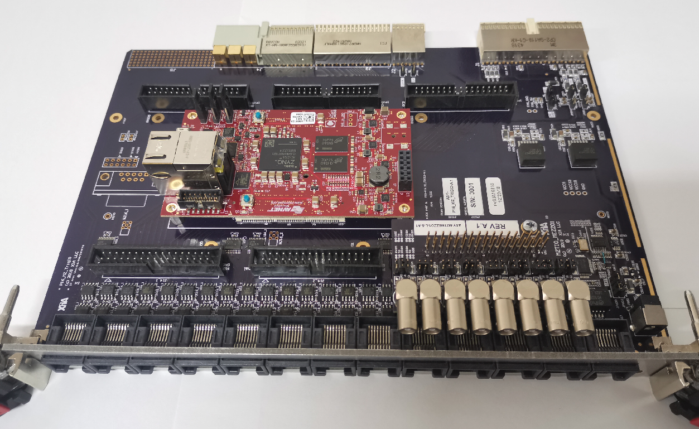

MZTIO¶
Pixie-16 MZ-TrigIO 设计用于将信号从背板（后连接器）连接到前面板（前连接器），并在 FPGA 架构中实现逻辑组合。它具有以下功能和特性：
用于 Pixie-16 的以太网可编程触发/符合控制模块
48+ Pixie-16 背板触发连接到本地 Zynq 处理器
48 个前面板 LVDS 连接到本地 Zynq 处理器
带嵌入式 Linux 的 MicroZed Zynq 处理器，作为独立 PC，内置 SD 卡驱动器，USB 主机，10/100 以太网，网络服务器等
1588 PTP 和 SyncE 时钟同步
开源用户访问软件和固件
用作独立桌面设备或 6U PXI 机箱
通过子卡自定义 I/O 标准
更多详细信息，请访问 http://wuhongyi.cn/MZTIO/
